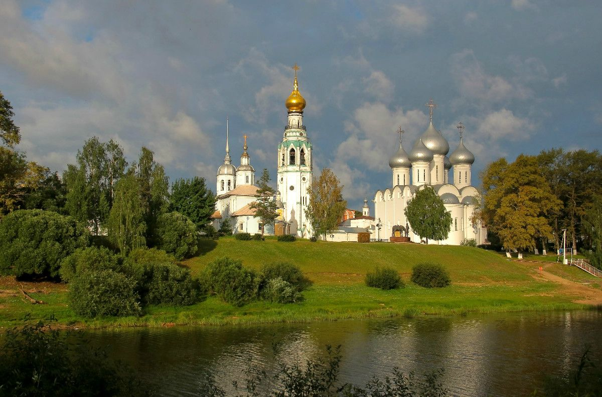

Добро пожаловать
Вологда — один из старейших городов Русского Севера, основанный в 1147 году. Это город уникальной деревянной архитектуры и северного гостеприимства.
На этом сайте вы познакомитесь с наследием нашего края, которое мы бережно храним для будущих поколений.

Краткая история
Путь через века
Узнайте, как Вологда прошла путь от северного форпоста до культурного центра.
Перейти →Что посетить
Достопримечательности
Софийский собор, Кремлевская площадь и уникальные резные дома.
Смотреть список →Традиции
Промыслы
Богатство северного края: от знаменитого вологодского кружева до легендарного масла.
Перейти к разделу →